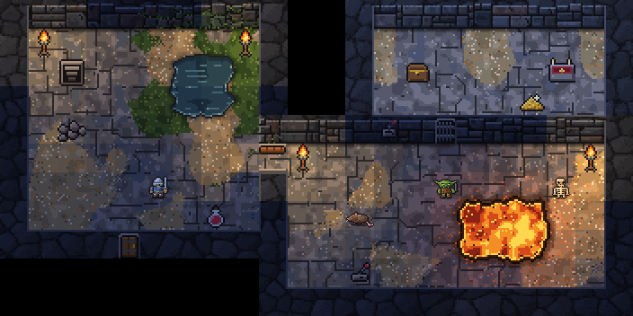
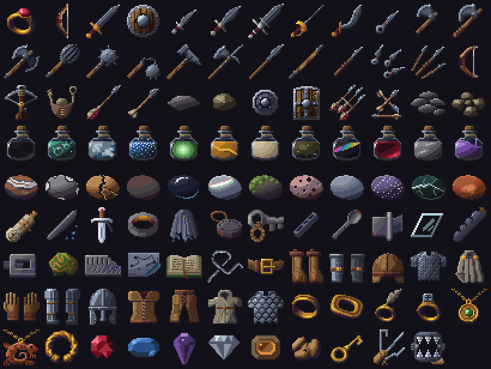
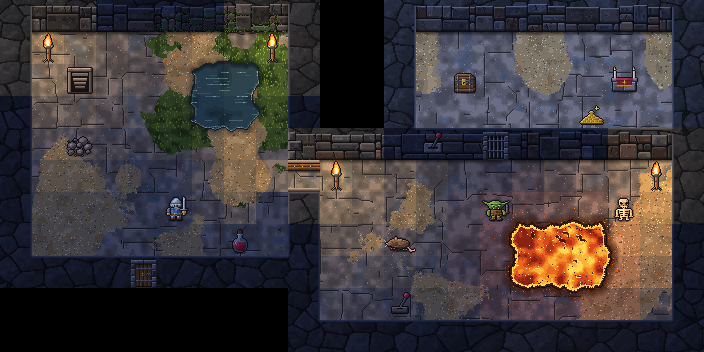
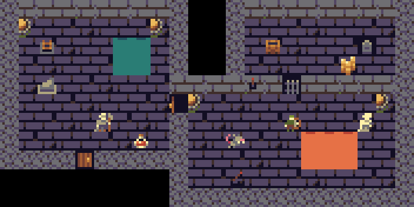
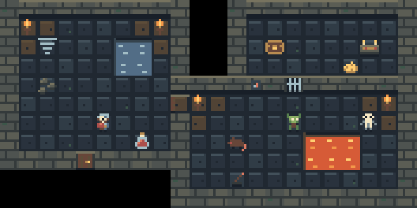
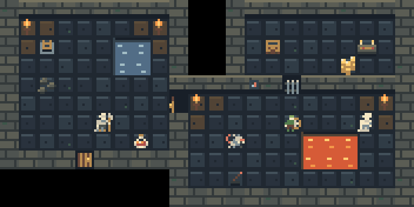

Where it started

Round 3 with the hero drawn anew at 64 × 64: a face with eyes, brows and a mouth, the scarf as one cloth, Furia straight in the hand, the tower shield larger, and the bow worn across the back at both sizes. Rest the pointer on an item for its short card; click it for the full note, as the game's Examine shows it, and close that with its X, a click outside or Escape. The short card now goes away when the pointer leaves the item. Full screen and the keys below work as in round 3. None of it is in the game yet.
036's screen with the author's round-3 feedback: the numbers held tight to their lines with an iron separator between the columns, filter tabs over a taller Pack, a button to save the log, a faint halo round the moon.
Point or use the arrow keys · click or Enter for an item's full note · F full screen · G gear · T Furia's state · S figure size · B background
Round 2 with Furia awake: pick the Furia gear and switch her between dormant, ignited and raging, and the sword in the hero's hand and her picture in the Main hand Slot play the same loop. The tower shield on the figure is redrawn from its picture in the Off hand Slot, so the two now match. Rest the pointer on any item, worn, in the Pack or on the number keys, to see its card. New on the screen: filter tabs over the Pack (all, gear, consumables, other), the numbers drawn tighter with a separator, a button that saves the log (it works here too), and a faint glow round the moon. Full screen shows it at the largest whole-number size (×2 on a 2560 × 1440 screen), and the keys below switch it there too. None of it is in the game yet.
036's screen with the author's round-3 feedback: the numbers held tight to their lines with an iron separator between the columns, filter tabs over a taller Pack, a button to save the log, a faint halo round the moon.
Point or use the arrow keys · F full screen · G gear · T Furia's state · S figure size · B background
The side column, chosen from the three below, worked into a whole screen: the map with the bars on its corner, a row of eight slots under it for potions and abilities, the hero with what they wear in each Slot, the Pack, the full message log, the skills and crafts at hand, the Compendium and the Options. The hero now shows the gear: each worn thing is a layer laid on one body, so a tower shield or Furia in the hand changes the figure without a drawing for every combination. Switch the figure between a 32 × 32 drawing shown four times over and a 64 × 64 one shown twice, the gear between the starting kit and Furia with a tower shield, and a quiet night scene behind on or off. None of it is in the game yet.

035 A's column at 1280 x 720: the figure large in its arch with the gear it wears, the bars on the map's corner, the number keys under the map, the full log, the Skill strip.
Point or use the arrow keys · F: full screen, at the largest whole-number size (×2 on a 2560 × 1440 screen)
Three concepts for the dark space around the map while you play: the hero with what they wear in each Slot, the numbers you check every turn, the Pack, and quick slots on the number keys (an idea; the game has none). The map is the same room of the Mines in all three; what changes is what stands around it. None of it is in the game yet. Point at anything on a screen, or use the arrow keys, to see what it is.
Everything in one slate column right of the view, read top to bottom: the hero in a lit recess with the Worn Slots round it, the numbers, the Pack, the quick slots.
Point or use the arrow keys · F: full screen, at the largest whole-number size
The first screen of the game, before the Roster: a lone hero at a campfire under the night sky, the monsters waiting where the light ends, the title, and the menu. Three concepts, and A2, a second round of the first: the City's castle high on its crag, new trees, a hero who breathes. None of it is in the game yet. Each one is live: click it, walk the menu with the arrow keys, and Enter or a click says what a row opens.
A forest clearing at night: the lone hero by a campfire, the City's castle far behind on its crag, and at the edge of the firelight, under the dark trees, goblins, a wolf and the Goblin King waiting.
Arrow keys walk the menu · Enter or a click picks · F: full screen
The game still paints every tile in code while its first real pixel art is drawn. These are the looks that were tried, each one drawing the same test room. On 25 October 2026 Torchlit, 16×16, with its hero drawn at 32×32, was chosen as the game's art; the looks set aside are in the archives at the bottom. Click a look to see its tiles one by one and every version of it so far.




Looks that were tried and set aside. They stay here so the choice can be seen.





Mini Medieval art by VEXED, v3x3d.itch.io/mini-medieval, CC BY 4.0.